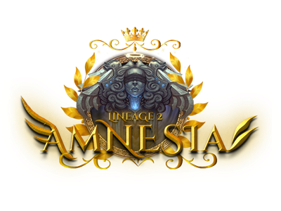
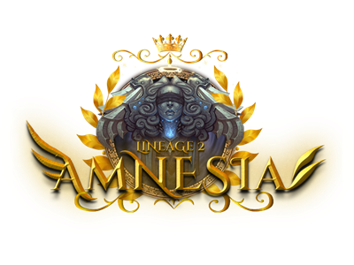

Amnesia Interlude
Lineage II server
Lineage II Amnesia

Lineage II Amnesia

Podras ver un breve resumen de todo el contenido que encontraras dentro de Lineage II Amnesia
Abarcando el sistema de transparencia, farmeo, equipamiento, personalización del personaje, dark dungeons, SOULS, dungeons e infernal dungeons y los custom raid boss
Se implemento un sistema de transparencia que permite a los usuarios acceder a información detallada sobre otros jugadores. Al utilizar el comando ".watch" y targetear , los usuarios pueden ver el inventario, habilidades y estadísticas del jugador que se desee.
La finalidad es prevenir quejas y conflictos entre los jugadores del servidor. Al proporcionar a los usuarios acceso a información completa sobre otros jugadores, se fomenta la transparencia y la capacidad de evaluar objetivamente el progreso y habilidades de cada jugador.
Creemos que en l2 Amnesia debera haber igualdad y justicia para todos los jugadores del servidor, por eso decidimos implementar esta funcionalidad.

Dungeon Zone es un sistema único en el que podrás enfrentarte a otros jugadores en intensas batallas, mientras exploras mapas aleatorios que cambian periódicamente.
En esta zona, tendrás la oportunidad de combatir contra formidables monstruos que habitan el lugar. Estos mobs no solo son poderosos, sino que también ofrecen generosos premios.
Es un área PVP, lo que significa que no solo estarás enfrentando a los monstruos, sino también a otros jugadores
La metodología de equipamiento será con event medals y glittering medals. Las podras conseguir en las zonas de farmeo y/o dungeons
A su vez, ciertos items requerirán de Raids Token, que será un coin que lo podrás conseguir asesinado a los diversos raid boss custom del servidor.
También, habrán bolsas aleatorias, donde podrás equiparte, acompañado de la suerte de manera aleatoria con un menor costo de event medals/glitterings

Existe una zona donde viviras adrenalina pura! La Dark Dungeon es una instancia a la que podras viajar desde su respectivo NPC en Giran todos los días a las 17:30hs y a las 22:30hs con duración de una hora.
Aqui, será una de las dos formas en la que podras conseguir Event Medal High y adena!
Pero cuidado, las Event Medals High estarán en juego, es decir cada vez que mates a un jugador le sacaras un 30% de este objeto que tengas en el inventario, pero si te matan ellos te quitarán a ti un 30% de tu inventario
Recomendamos guardar los items conseguidos anteriormente en otras zonas en el warehouse antes de viajar. Todo lo guardado en el warehouse, quedara a salvo.
En las dungeon zones, podras obtener los Soul Coins, estas son las almas de los mobs que podrás utilizar para volverte mucho mas poderoso.
Cada vez que asesines un monstruo de la Dungeon Zone, tendrás la chance de obtener un Soul Coin, que al tener la cantidad necesaria podrás cambiarlo por un Soul Book.
El soul book te servirá para obtener nuevos poderes a elección pasivos en tu personaje.
Podrás tener un máximo de 5 skills souls.
Los días sábados y domingos de 15:00hs a 16:00hs y de 22:15hs a 00:15hs (GMT-3) se habilitará la Infernal Dungeon, esta zona será PVP y la que más dificultad tendrá en el servidor.
En esta zona te enfrentarás a las criaturas más poderosas, con el mejor tesoro y a la mitad aparecerá un raid boss.

En Lineage II Amnesia te ofrecemos diversidad en PvP y en la personalización de tu personaje.
Siendo un servidor de “subclass acumulativa” donde podrás crear infinidades de combinaciones, también tendrás la posibilidad de usar tattoos los cuales te otorgarán stats según la circunstancia en la que te encuentres
Souls, los cuales podrás aprender con skilles pasivos y así lograr un personaje totalmente distinto a los demás.
Tenemos un sistema de skins, lo cual solo cambiaria tu apariencia, teniendo un total así de 51 armaduras y 51 cascos, todos combinables entre sí.
 Tattoos
Detalles
Tattoos
Detalles
Los tattoos darán +5% de estadísticas según el tattoo que elijas; Hay una amplia variedad de elecciones y los podrás conseguir en el shop por farmeo de manera aleatoria
Skins
Detalles
Implementamos una amplia variedad de skins, los podras obtener con el comando .skin, las skins NO otorgarán estadísticas adicionales, solo será visual.
Weapons & Armors
Detalles
A medida del avance del servidor se irán actualizando cuestiones como drop de farmeos y reduciendo precios para la facilidad de los nuevos jugadores.
Dungeon Zone
Detalles
La dungeon Zone estará disponible 24/7 y podrás viajar desde la Custom GK. Son zonas aleatorias PVP que cambiarán cada 4hs, donde habrán mobs y buen drop. Aquí conseguirás Soul Coins con mayor %. También habrá un RB cada vez que la zona cambie.
Infernal Dungeon Zone
Detalles
Esta zona estará únicamente disponible los sábados y domingos. Es una zona PVP pensada para todos los jugadores, habrán enemigos con recompensas más altas que en la dungeon zone, pero nada que no se pueda conseguir en otras zonas.
Buscamos que todos los jugadores tengan un juego justo.
Por eso, contamos con el comando de transparencia .watch (sirve para ver el inventario/skills/stats de otro jugador)
Además un sistema de anticheat premium que eliminará hasta el 95% los programas de bots dentro del servidor
Las donaciones no serán relevantes a la hora del equipamiento, la moneda de donación servirá únicamente para items irrelevantes, como customización,striders,servicios,premium.
Buscamos que los jugadores se sientan cómodos en el servidor y sea un buen momento de recreación, por eso creemos que no es justo que el que quiera realizar una donación saque ventajas de el que no.

Las armas más poderosas del servidor son las Infinity, las podrás conseguir en el shop únicamente por farmeo y podrás utilizarlas sin ser hero.
No tendrán los respectivos skills de Infinity, pero si tendrán una diferencia en status de las grado S normales.
El servidor tiene un amplio sistema de personalización para los personajes. Con el comando ".skin" podrás probar y comprar la skin que más te guste, pudiendo tener más de una.
El skin del "Cuerpo" y el skin de la "Cabeza" están separados, es decir no vienen juntos, por lo que podrás usar cualquier casco con cualquier skin, personalizando tu personaje de la manera que tu quieras!
El servidor cuenta la protección "Active Anticheat". Este sistema avanzado ha sido implementado para prevenir el uso de trampas y exploits dentro del juego. Podran disfrutar de una experiencia de juego más justa y equilibrada, ya que monitorea constantemente el juego para detectar y eliminar cualquier forma de trampa o comportamiento deshonesto.